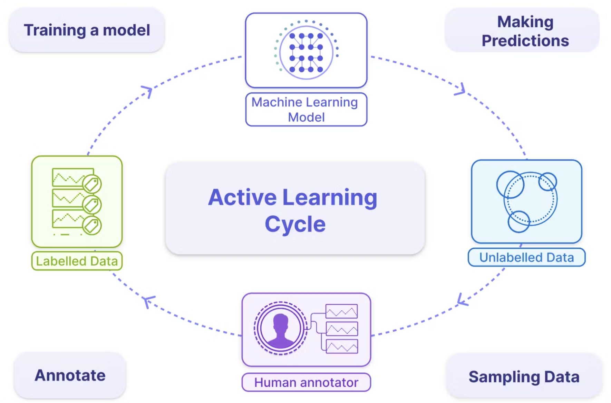

4. Training Data
3316512 Pharmaceutical AI
Chulalongkorn University
11 Mar 2026
Overview: The Role of Training Data
- Context: While ML curricula often focus on modeling, practitioners spend a significant amount of time wrangling training data.
- Impact: No matter how clever the algorithm, bad training data leads to poor performance.
- Core Topics:
- Sampling Methods
- Labeling Challenges
- Class Imbalance
- Data Augmentation
Sampling: Probability vs. Nonprobability
Sampling is the first step in creating training data.
- Nonprobability Sampling: Based on convenience or availability (e.g., convenience, snowball, judgment, or quota sampling). These often suffer from selection bias.
- Simple Random Sampling: Every member of the population has an equal chance of being selected.
- Stratified Sampling: The population is divided into groups (strata), and each group is sampled separately to ensure representation.
Train-Test Split with Scikit-Learn
The most basic sampling method is splitting your dataset into training and testing sets.
from sklearn.model_selection import train_test_split
import numpy as np
X, y = np.arange(10).reshape((5, 2)), range(5)
# Split dataset: 80% training, 20% testing
X_train, X_test, y_train, y_test = train_test_split(
X, y, test_size=0.2, random_state=42
)
print("Training data:\n", X_train)
print("Testing data:\n", X_test)Stratified Sampling
When classes are imbalanced, random splitting might result in a test set with no examples of the minority class. Stratified sampling ensures the class distribution is preserved.
# y has an imbalance: class 0 (8 samples), class 1 (2 samples)
y_imbalanced = [0, 0, 0, 0, 0, 0, 0, 0, 1, 1]
X_imbalanced = np.arange(20).reshape((10, 2))
# Stratify ensure both train and test sets have class 1
X_train, X_test, y_train, y_test = train_test_split(
X_imbalanced, y_imbalanced, test_size=0.2,
stratify=y_imbalanced, random_state=42
)
print("Test class distribution:", y_test)
# Likely to include both classes or at least proportional representationResampling with Scikit-Learn
You can manually resample your data (upsample minority or downsample majority) using sklearn.utils.resample.
from sklearn.utils import resample
# Upsample minority class (class 1)
X_upsampled, y_upsampled = resample(
X_imbalanced[y_imbalanced == 1],
y_imbalanced[y_imbalanced == 1],
replace=True, # sample with replacement
n_samples=4, # match number of majority class or desired number
random_state=42
)
print("Upsampled class 1:", y_upsampled)Handling the Lack of Labels
Labeling is often expensive and slow. Four major techniques to address this include:
- Semi-Supervision: Uses a small set of initial labels as “seeds” to generate more labels based on structural assumptions.
- Active Learning: The model identifies which unlabeled samples would be most useful to learn from and queries a human for those specific labels.
- Transfer Learning: Leverages models pretrained on a different (often abundant) task as a starting point.
Semi-Supervised: Self-Training
Self-training involves training a model on labeled data, predicting labels for unlabeled data, and adding high-confidence predictions to the training set.
import numpy as np
from sklearn import datasets
from sklearn.semi_supervised import SelfTrainingClassifier
from sklearn.svm import SVC
rng = np.random.RandomState(42)
iris = datasets.load_iris()
X = iris.data
# random select 30% of the data as unlabeled unlabeled are masked with -1
y_with_unlabeled = iris.target
random_unlabeled_points = rng.rand(X.shape[0]) < 0.3
y_with_unlabeled[random_unlabeled_points] = -1
svc = SVC(probability=True, gamma="auto")
self_training_model = SelfTrainingClassifier(svc)
self_training_model.fit(X, y_with_unlabeled)
y_with_self_training = self_training_model.predict(X)
svc.fit(X, y_with_self_training)
y_pred = svc.predict(X)Semi-Supervised: Label Spreading
Label Spreading propagates labels through the data graph. Points close to each other in feature space are likely to share the same label.
import numpy as np
from sklearn import datasets
from sklearn.semi_supervised import LabelSpreading
from sklearn.svm import SVC
rng = np.random.RandomState(42)
iris = datasets.load_iris()
X = iris.data
y_with_unlabeled = iris.target
random_unlabeled_points = rng.rand(X.shape[0]) < 0.3
y_with_unlabeled[random_unlabeled_points] = -1
# Kernel='knn' constructs a graph using k-nearest neighbors
label_prop_model = LabelSpreading(kernel='knn', alpha=0.8)
# Fit on data with mixed labeled/unlabeled points (-1)
label_prop_model.fit(X, y_with_unlabeled)
print("Predicted labels:", label_prop_model.transduction_)Active Learning

Active Learning: Uncertainty Sampling
In uncertainty sampling, we query labels for instances where the model is least confident (probability closest to 0.5).
import numpy as np
from sklearn import datasets
from sklearn.semi_supervised import LabelSpreading
from sklearn.svm import SVC
from sklearn.linear_model import LogisticRegression
rng = np.random.RandomState(42)
iris = datasets.load_iris()
X = iris.data
y = iris.target
X_labeled, X_no_labeled, y_labeled, _ = train_test_split(
X, y, test_size=0.2, random_state=42
)
# Train model on currently labeled data
clf = LogisticRegression().fit(X_labeled, y_labeled)
# Predict probabilities on pool of unlabeled data
probs = clf.predict_proba(X_no_labeled)
# Calculate uncertainty (e.g., 1 - max_probability)
uncertainty = 1 - probs.max(axis=1)
# Select top K most uncertain samples to query
query_indices = np.argsort(uncertainty)[-5:]
print("Query these samples:", query_indices)Transfer Learning for Labeling
Transfer Learning (or Domain Adaptation) uses a model trained on a source domain (abundant labels) to predict on a target domain (scarce labels). High-confidence predictions can be used as “pseudo-labels”.
from sklearn.ensemble import RandomForestClassifier
# 1. Train on Source Domain (Abundant Labels)
clf = RandomForestClassifier().fit(X_source, y_source)
# 2. Predict on Target Domain (Key: Domain Similarity)
probs = clf.predict_proba(X_target)
preds = clf.predict(X_target)
# 3. Filter High-Confidence Predictions (Pseudo-Labeling)
confidence = probs.max(axis=1)
high_conf_mask = confidence > 0.9
X_pseudo = X_target[high_conf_mask]
y_pseudo = preds[high_conf_mask]
print(f"Generated {len(y_pseudo)} pseudo-labels")Challenges of Class Imbalance
Class imbalance occurs when there is a substantial difference in the number of samples across classes.
- Why it’s hard: The model lacks sufficient signal to detect minority classes and may assume they don’t exist.
- Evaluation: Accuracy is often misleading; practitioners should use Precision, Recall, and F1 scores.
- Mitigation:
- Data-level: Resampling (Oversampling the minority or Undersampling the majority).
- Algorithm-level: Modifying the loss function (e.g., Cost-sensitive learning or Focal loss).
Addressing Imbalance: Class Weights
Most scikit-learn classifiers support a class_weight parameter to penalize mistakes on the minority class more heavily.
from sklearn.linear_model import LogisticRegression
from sklearn.ensemble import RandomForestClassifier
# 'balanced' mode automatically adjusts weights inversely proportional
# to class frequencies in the input data
clf_rf = RandomForestClassifier(class_weight='balanced')
clf_lr = LogisticRegression(class_weight='balanced')
clf_rf.fit(X_train, y_train)Evaluation Metrics for Imbalance
Accuracy is misleading when classes are imbalanced (e.g., 99% accuracy if 99% of data is negative). Use Precision, Recall, and F1-Score.
Library: Imbalanced-Learn
Imbalanced-Learn (imblearn) is a library compatible with scikit-learn that provides advanced re-sampling techniques.
from imblearn.over_sampling import SMOTE
from imblearn.under_sampling import RandomUnderSampler
from imblearn.pipeline import Pipeline
# Pipeline: Upsample minority -> Downsample majority -> Train
model = Pipeline([
('over', SMOTE(sampling_strategy=0.1)),
('under', RandomUnderSampler(sampling_strategy=0.5)),
('model', RandomForestClassifier())
])
model.fit(X_train, y_train)Data Augmentation
This family of techniques increases training data volume to make models more robust to noise and adversarial attacks.
- Simple Transformations: Label-preserving modifications like cropping/flipping images or replacing words with synonyms in NLP.
- Perturbation: Adding a small amount of noise to inputs to improve the model’s resilience.
- Data Synthesis: Creating entirely new data samples from scratch or by combining existing examples (e.g., using Mixup or generative models like CycleGAN). ```